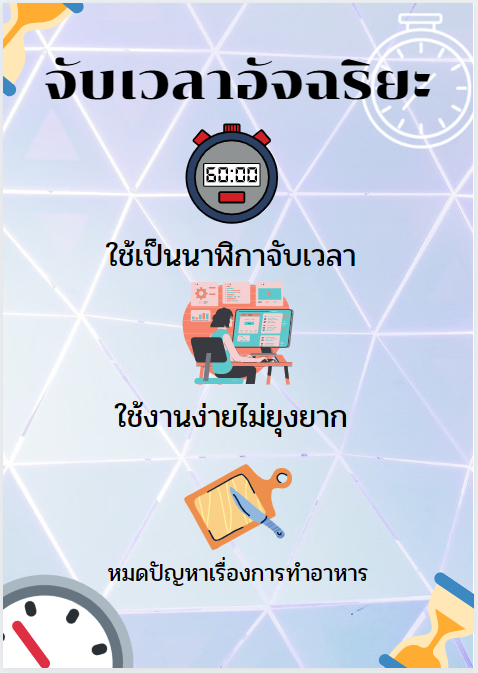

โครงงานนาฬิกาจับเวลาอาหารอัจฉริยะ (Smart Timer)
การทำอาหารให้อร่อย นอกจากที่จะต้องมีวัตถุดิบที่มีคุณภาพดีแล้ว ยังต้องใช้เวลาที่เหมาะสม โดยเวลาในการทำอาหารประเภทต่างๆ มีเวลาที่ต่างกันออกไป
จึงต้องพัฒนาแอปพลิเคชั่นเพื่อช่วยให้การจับเวลาในการทำอาหารมีความสะดวกสบาย และความแม่นยำมากขึ้น
ผู้จัดทำจึงได้พัฒนาแอปพลิเคชั่น นาฬิกาจับเวลาทำอาหารอัจฉริยะ ด้วยภาษาซี โดยจัดการรวบรวมนาฬิกาจับเวลาทำอาหารประเภทต่างๆในแอปพลิเคชั่นเดียว
แต่หากผู้ใช้งานยังมีความต้องการที่จะจับเวลาอาหารประเภทอื่นนอกเหนือจากนี้
ยังสามารถให้ผู้ใช้สามารถเพิ่ม Preset และกดหยุดเวลาแบบ Stopwatch ได้เอง

วัตถุประสงค์ของโครงงาน
1. เพื่อทำให้สามารถจับเวลาในการทำอาหารได้แม่นยำขึ้นและได้อาหารที่มีรสชาติดี
2. เพื่อทำแอปพลิเคชั่นนาฬิกาจับเวลาที่สามารถใช้งานได้จริง
Created By Comprotimer
Official Github